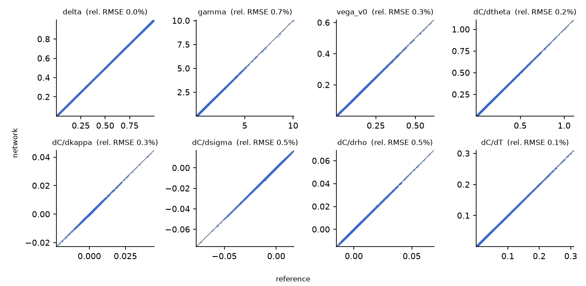
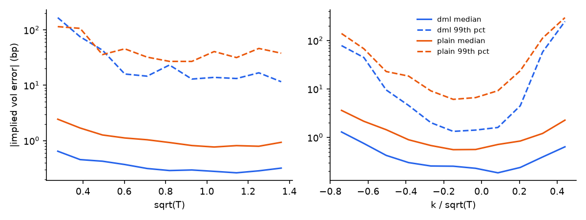

Things I built and shipped
-
 Risk HubRisk lab in the browser2026
115 risk modules, from VaR backtests and FRTB to CVA, LCR and AI model risk. Python is the source of truth and every figure is tested against an independent reference.
Risk HubRisk lab in the browser2026
115 risk modules, from VaR backtests and FRTB to CVA, LCR and AI model risk. Python is the source of truth and every figure is tested against an independent reference.
-
 Neural Heston pricerDifferential ML, validated2026
A network trained on prices and their derivatives. 0.8 bp mean implied-vol error, 26× faster than the reference, with an independent validation report: fit for purpose inside its training box. Live demo on Streamlit.
Neural Heston pricerDifferential ML, validated2026
A network trained on prices and their derivatives. 0.8 bp mean implied-vol error, 26× faster than the reference, with an independent validation report: fit for purpose inside its training box. Live demo on Streamlit.
-

riskhub-enginePython library on PyPI2026 The engine behind Risk Hub as a package:pip install riskhub-engine. MIT licence, 17 tests. - Hybrid HW1F / lognormal calibrationBocconi final work2026 Calibrating a hybrid rates–equity model for long-dated structured rate products.
- IMC Prosperity 2026Algorithmic trading challenge2026 First team in Italy, 33rd of 18,803 teams worldwide.
- Structured products under uncertaintyMaster’s thesis, NEOMA2025 How structured products behave and are priced when market parameters are uncertain.
- Options package on an energy equityOTC structuring, dynamic hedge2025 Designed, priced and delta-hedged an OTC options package, then measured the hedge P&L.
Run a VaR yourself
A €1,000,000 position, 20,000 simulated scenarios, computed here in your browser. Change the inputs and the Monte Carlo figure is checked against the closed form, the way I check every model.
- Value at risk
- € 110,500
- Expected shortfall
- € 126,300
- Normal closed form
- € 110,500
- Monte Carlo vs closed form
- —
115 more models like this one, with real crypto data, in Risk Hub.
The numbers I stand behind
- 0.8 bp
- Mean implied-vol error of my neural Heston pricer, out of sample; 7.5 bp at the 99th percentile.
- 26×
- Faster than the reference pricer on 10,000 prices, on a laptop CPU.
- 115
- Risk modules in Risk Hub, each checked against an independent reference.
- 33rd
- Of 18,803 teams at IMC Prosperity 2026, and first in Italy.
- 7 h
- Saved every week by the 11 automations I wrote as an auditor at SAVOURS.


Why I build the checks
I’m an Associate in valuation at Finalyse, in Belgium, where I build Monte Carlo pricers for OTC derivatives and structured products: Hull-White, lognormal and hybrid models, their calibration and Greeks, and the SQL and VBA that keep the runs moving. Alongside, I’m finishing an MSc in Quantitative Finance and Risk Management at Bocconi.
What I enjoy most is the second look. A price is only useful if you know where it stops being right, so the projects on this page each come with their own test: Risk Hub compares every figure with an independent reference, and the neural pricer has a validation report that says plainly where it can be trusted.
I’m looking for a role in model validation, XVA or valuation, or market risk. Asia first, and also Paris, London, Dublin or Amsterdam. I’m sitting FRM Part 1 and preparing Part 2.
Louis DelacourRouen, Sheffield, Regensburg, Milan, Brussels
Experience and training
Experience
- Finalyse, Associate, ValuationOTC derivatives and structured products: Monte Carlo pricers, calibration, Greeks, EMIR stress tests.2026 – now
- SAVOURS, Auditor and automation leadSheffield. 30+ tier-one clients; portfolio grown 42% in six months to 140 clients.2023 – 2024
- OPA Finance Club, Trading departmentMacro multi-asset analysis and a Python backtesting framework.2024 – 2025
- Humanitarian missions, TreasurerRaised €10–20k per mission; treasurer on two.2017 – 2022
Education
- Bocconi, MSc Quantitative Finance & Risk Management2025 – 2027
- NEOMA, MiM and MSc Financial Markets & Risk ManagementGPA 3.86 / 42021 – 2025
- Universität Regensburg, exchangeFinancial econometrics and computer science, First Class Honour.2024
- FRM Part 1 candidate, Part 2 in preparation2026
Tools and methods
- Python: NumPy, Pandas, SciPy, PyTorchdaily
- SQL, VBA, LaTeXdaily
- Monte Carlo, calibration, Greekspricing
- VaR, expected shortfall, stress testing, backtestingrisk
- Model validation (SR 11-7), XVAvalidation
Languages and certificates
- Frenchnative
- Englishfluent
- MandarinHSK 2, aiming for HSK 3
- Bloomberg Market Concepts, QFI Python, Amplifyme (top 5%)certificates
Let’s talk
Hiring for model validation, XVA or market risk? Tell me about the role.
- louis.delacour@master.unibocconi.itemail
- github.com/louisdelacour21code
- pypi.org/project/riskhub-enginepackage
- neural-heston.streamlit.appdemo
- Belgium · open to Asia and Europelocation